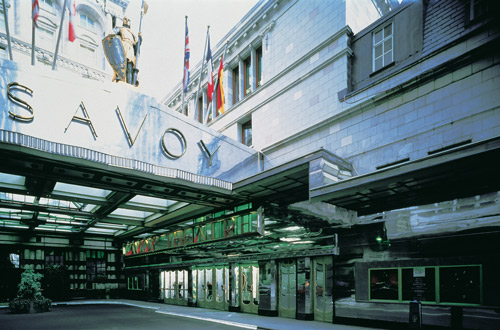
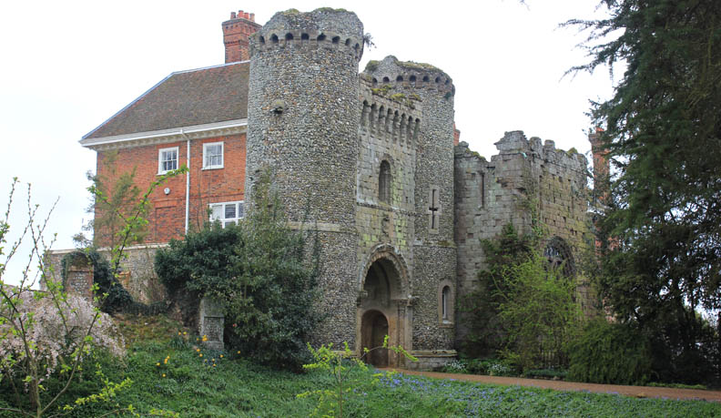
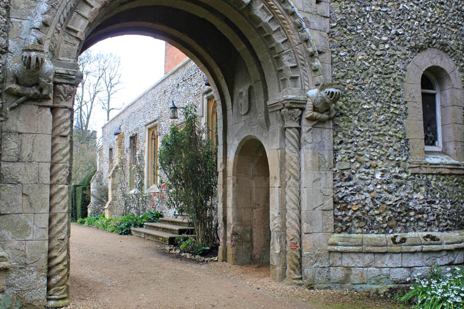
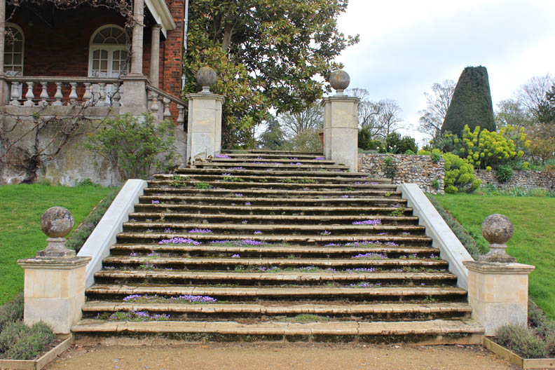
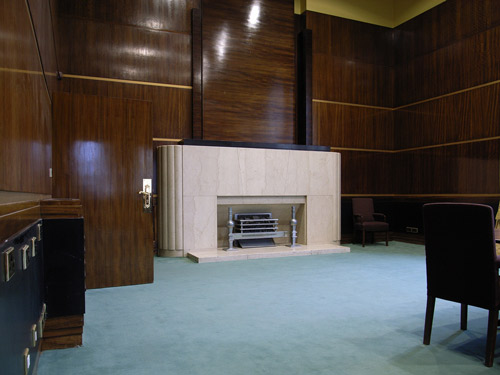

The Savoy Hotel where Poirot accepts the commission from Lucy Crale.

A private house at Benington Lordship, Hertfordshire was used as 'Alderbury House'.



The Wilkins Building at UCL used as the 'Law Courts' where Poirot interviews Sir Montague Depleach. (Also used in 'Four and Twenty Blackbirds' and 'Hickory, Dickory, Dock').

The Royal Masonic Hospital in Ravenscourt Park, London W6 used as the location where Poirot interviews Philip Blake. (Also used in 'The Adventure of the Clapham Cook' and 'Wasps' Nest').

Burlington Arcade where Poirot walks with Angela. (Also used in 'The Veiled Lady' and 'Lord Edgware Dies').